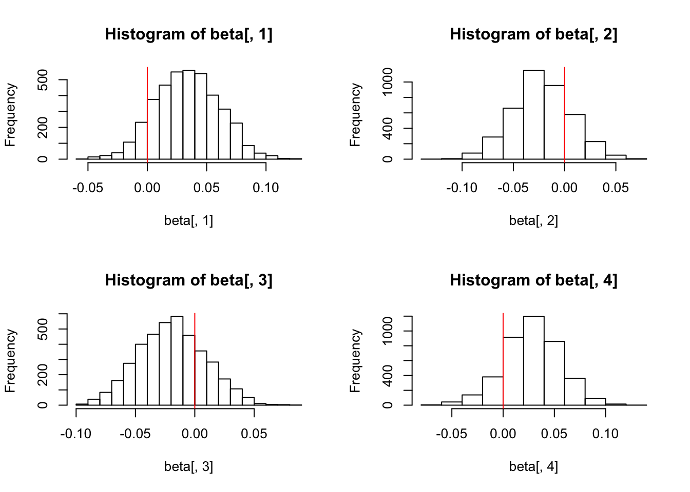
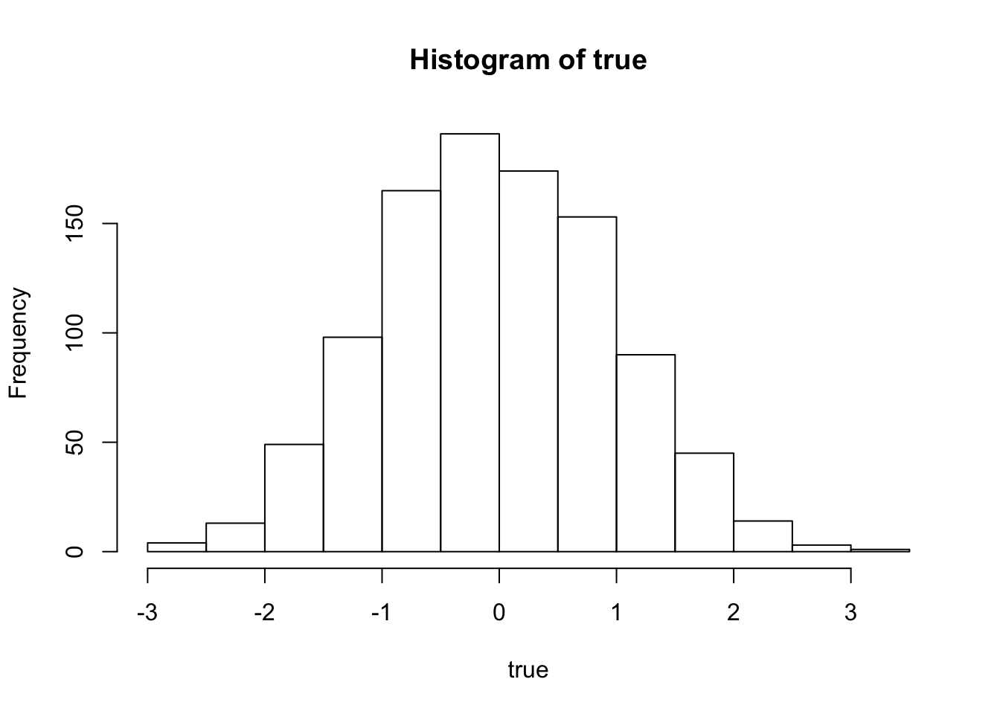
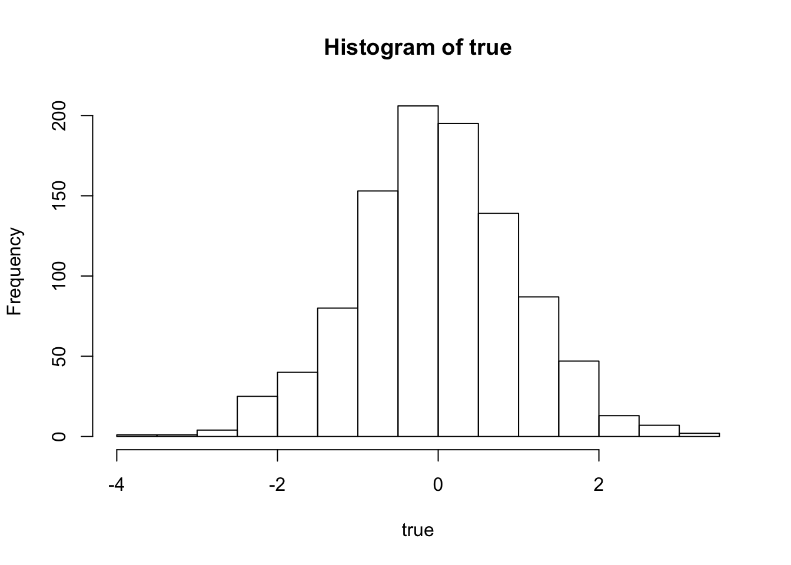
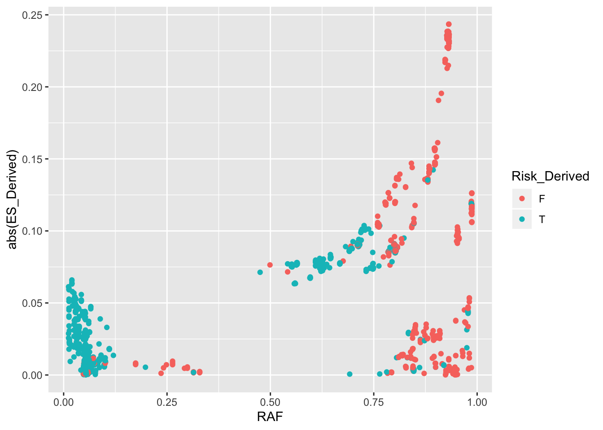
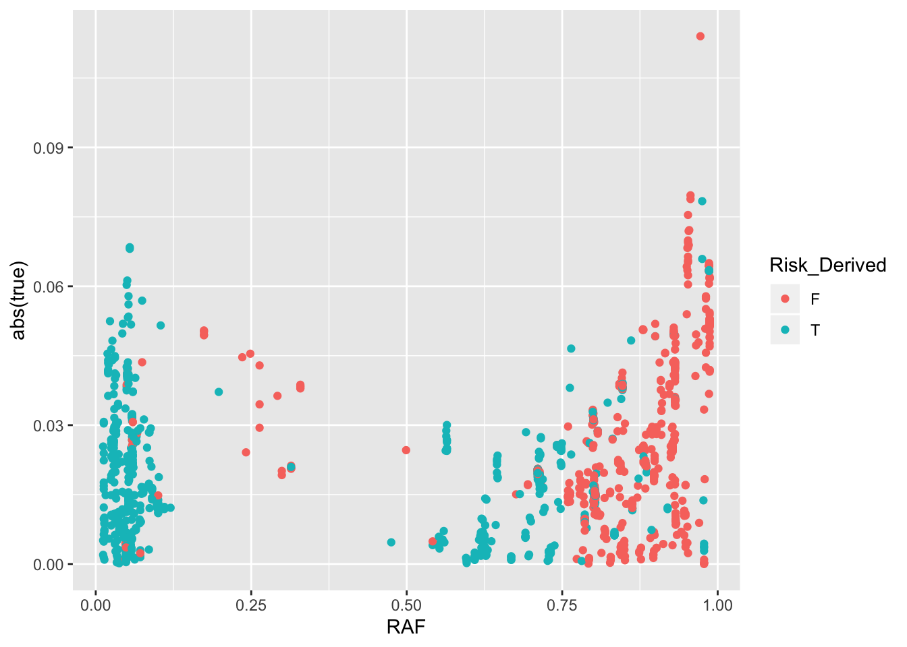

Last updated: 2020-06-01
Checks: 7 0
Knit directory: infer_mutational_bias/analysis/
This reproducible R Markdown analysis was created with workflowr (version 1.6.0). The Checks tab describes the reproducibility checks that were applied when the results were created. The Past versions tab lists the development history.
Great! Since the R Markdown file has been committed to the Git repository, you know the exact version of the code that produced these results.
Great job! The global environment was empty. Objects defined in the global environment can affect the analysis in your R Markdown file in unknown ways. For reproduciblity it’s best to always run the code in an empty environment.
The command set.seed(20191108) was run prior to running the code in the R Markdown file. Setting a seed ensures that any results that rely on randomness, e.g. subsampling or permutations, are reproducible.
Great job! Recording the operating system, R version, and package versions is critical for reproducibility.
Nice! There were no cached chunks for this analysis, so you can be confident that you successfully produced the results during this run.
Great job! Using relative paths to the files within your workflowr project makes it easier to run your code on other machines.
Great! You are using Git for version control. Tracking code development and connecting the code version to the results is critical for reproducibility. The version displayed above was the version of the Git repository at the time these results were generated.
Note that you need to be careful to ensure that all relevant files for the analysis have been committed to Git prior to generating the results (you can use wflow_publish or wflow_git_commit). workflowr only checks the R Markdown file, but you know if there are other scripts or data files that it depends on. Below is the status of the Git repository when the results were generated:
Ignored files:
Ignored: .DS_Store
Ignored: .Rhistory
Ignored: .Rproj.user/
Ignored: .snakemake/conda-archive/
Ignored: .snakemake/conda/
Ignored: .snakemake/locks/
Ignored: .snakemake/shadow/
Ignored: .snakemake/singularity/
Ignored: analysis/.DS_Store
Ignored: code/.DS_Store
Ignored: code/parse_gwas_atlas/.DS_Store
Ignored: code/parse_gwas_atlas_nonsig/.DS_Store
Ignored: data/.ipynb_checkpoints/
Ignored: data/1000G_20101123_v3_GIANT_chr1_23_minimacnamesifnotRS_CEU_MAF0.01/
Ignored: data/ALL.chr1.phase3_shapeit2_mvncall_integrated_v5a.20130502.genotypes.EUR/
Ignored: data/GWAS_ATLAS/
Ignored: data/LD_Blocks/
Ignored: data/STRAT/
Ignored: data/UKBB/
Ignored: output/.DS_Store
Ignored: output/47UKBB/
Ignored: output/BBJ/.DS_Store
Ignored: output/GWAS_ATLAS/
Ignored: output/STRAT/
Ignored: output/UKBB/.DS_Store
Untracked files:
Untracked: .snakemake/log/2020-03-23T164719.122778.snakemake.log
Untracked: .snakemake/log/2020-03-23T164841.172341.snakemake.log
Untracked: .snakemake/log/2020-03-23T165052.235224.snakemake.log
Untracked: .snakemake/log/2020-03-23T173201.671245.snakemake.log
Untracked: .snakemake/log/2020-03-23T190924.512591.snakemake.log
Untracked: .snakemake/log/2020-03-23T194341.864454.snakemake.log
Untracked: .snakemake/log/2020-03-24T091905.302205.snakemake.log
Untracked: .snakemake/log/2020-03-24T092201.882781.snakemake.log
Untracked: .snakemake/log/2020-03-24T092404.171989.snakemake.log
Untracked: .snakemake/log/2020-03-24T092428.802361.snakemake.log
Untracked: .snakemake/log/2020-03-24T093017.568005.snakemake.log
Untracked: .snakemake/log/2020-03-24T093241.050903.snakemake.log
Untracked: .snakemake/log/2020-03-24T093254.384314.snakemake.log
Untracked: .snakemake/log/2020-03-24T093258.136407.snakemake.log
Untracked: .snakemake/log/2020-03-24T093449.542770.snakemake.log
Untracked: .snakemake/log/2020-03-24T111104.620227.snakemake.log
Untracked: .snakemake/log/2020-03-24T111633.863041.snakemake.log
Untracked: .snakemake/log/2020-03-24T111701.823844.snakemake.log
Untracked: .snakemake/log/2020-03-24T152044.472618.snakemake.log
Untracked: .snakemake/log/2020-03-24T152202.883346.snakemake.log
Untracked: .snakemake/log/2020-03-24T152218.356089.snakemake.log
Untracked: .snakemake/log/2020-03-24T152224.553347.snakemake.log
Untracked: .snakemake/log/2020-03-24T152253.175681.snakemake.log
Untracked: .snakemake/log/2020-03-24T152612.976687.snakemake.log
Untracked: .snakemake/log/2020-03-24T152904.986735.snakemake.log
Untracked: .snakemake/log/2020-03-24T154155.249321.snakemake.log
Untracked: .snakemake/log/2020-03-24T154220.752872.snakemake.log
Untracked: .snakemake/log/2020-03-24T154225.402696.snakemake.log
Untracked: .snakemake/log/2020-03-24T154242.303180.snakemake.log
Untracked: .snakemake/log/2020-03-24T154540.706170.snakemake.log
Untracked: .snakemake/log/2020-03-24T154744.109794.snakemake.log
Untracked: .snakemake/log/2020-03-24T154756.043621.snakemake.log
Untracked: .snakemake/log/2020-03-24T155047.465119.snakemake.log
Untracked: .snakemake/log/2020-03-24T155100.393951.snakemake.log
Untracked: .snakemake/log/2020-03-24T155721.217180.snakemake.log
Untracked: .snakemake/log/2020-03-24T155802.251555.snakemake.log
Untracked: .snakemake/log/2020-03-24T155823.527017.snakemake.log
Untracked: .snakemake/log/2020-03-24T160158.325053.snakemake.log
Untracked: .snakemake/log/2020-03-24T160554.632453.snakemake.log
Untracked: .snakemake/log/2020-03-24T160813.358275.snakemake.log
Untracked: .snakemake/log/2020-03-24T161022.670871.snakemake.log
Untracked: .snakemake/log/2020-03-24T161257.193338.snakemake.log
Untracked: .snakemake/log/2020-03-30T171337.338623.snakemake.log
Untracked: .snakemake/metadata/b3V0cHV0L0dXQVNfQVRMQVMvZXZvX2FkZGVkL0NBRF8zOTI1LTAuMDAwMV9ldm8udHh0
Untracked: .snakemake/metadata/b3V0cHV0L0dXQVNfQVRMQVMvZXZvX2FkZGVkL1QyRF80MDg1LTAuMDAwMV9ldm8udHh0
Untracked: .snakemake/metadata/b3V0cHV0L0dXQVNfQVRMQVMvZXZvX2FkZGVkL1VDXzIwMzAtMC4wMDAxX2V2by50eHQ=
Untracked: .snakemake/metadata/b3V0cHV0L0dXQVNfQVRMQVMvZXZvX2FkZGVkL2hlaWdodF8xNDItMC4wMDAxX2V2by50eHQ=
Untracked: .snakemake/metadata/b3V0cHV0L0dXQVNfQVRMQVMvZXZvX2FkZGVkL3NjaGl6b3BocmVuaWFfMzk4Mi0wLjAwMDFfZXZvLnR4dA==
Untracked: .snakemake/metadata/b3V0cHV0L0dXQVNfQVRMQVMvcGFyc2VkX2d3YXMvQ0FEXzM5MjVfMC4wMDAxX3BhcnNlZC50eHQ=
Untracked: .snakemake/metadata/b3V0cHV0L0dXQVNfQVRMQVMvcGFyc2VkX2d3YXMvVDJEXzQwODVfMC4wMDAxX3BhcnNlZC50eHQ=
Untracked: .snakemake/metadata/b3V0cHV0L0dXQVNfQVRMQVMvcGFyc2VkX2d3YXMvVUNfMjAzMF8wLjAwMDFfcGFyc2VkLnR4dA==
Untracked: .snakemake/metadata/b3V0cHV0L0dXQVNfQVRMQVMvcGFyc2VkX2d3YXMvaGVpZ2h0XzE0Ml8wLjAwMDFfcGFyc2VkLnR4dA==
Untracked: .snakemake/metadata/b3V0cHV0L0dXQVNfQVRMQVMvcGFyc2VkX2d3YXMvc2NoaXpvcGhyZW5pYV8zOTgyXzAuMDAwMV9wYXJzZWQudHh0
Untracked: .snakemake/metadata/b3V0cHV0L0dXQVNfQVRMQVMvcHJ1bmVkL0NBRF8zOTI1XzAuMDAwMS5wcnVuZS5pbg==
Untracked: .snakemake/metadata/b3V0cHV0L0dXQVNfQVRMQVMvcHJ1bmVkL1QyRF80MDg1XzAuMDAwMS5wcnVuZS5pbg==
Untracked: .snakemake/metadata/b3V0cHV0L0dXQVNfQVRMQVMvcHJ1bmVkL1VDXzIwMzBfMC4wMDAxLnBydW5lLmlu
Untracked: .snakemake/metadata/b3V0cHV0L0dXQVNfQVRMQVMvcHJ1bmVkL2hlaWdodF8xNDJfMC4wMDAxLnBydW5lLmlu
Untracked: .snakemake/metadata/b3V0cHV0L0dXQVNfQVRMQVMvcHJ1bmVkL3NjaGl6b3BocmVuaWFfMzk4Ml8wLjAwMDEucHJ1bmUuaW4=
Untracked: .snakemake/scripts/tmp7997be50.get_evolutionary_information_from_1kg_GWAS_ATLAS.py
Untracked: analysis/GWAS_Atlas_LD_Blocks.Rmd
Untracked: analysis/Instrumental_variable.Rmd
Untracked: analysis/LD_Block_Jacknife.Rmd
Untracked: analysis/test.Rmd
Untracked: code/LD_Block/
Untracked: code/parse_gwas_atlas_nonsig/height_142.R
Untracked: code/pc_regression.rds
Untracked: code/pc_regression.stan
Untracked: code/pc_regression_da.rds
Untracked: code/pc_regression_da.stan
Untracked: code/pc_regression_gwas.R
Untracked: code/pc_regression_parameters.R
Untracked: code/rsID_Pos_conversion.py
Untracked: code/rsID_Pos_conversion.py~
Untracked: output/GWAS_ATLAS_ANNOTATED/
Untracked: output/PC_REG/
Unstaged changes:
Modified: .snakemake/metadata/b3V0cHV0L1NUUkFUL3BydW5lZC9jaHIxX0VVUl8wLjA1LmVpZ2VudmVjLnZhci5EQS5wcnVuZS5pbg==
Modified: .snakemake/metadata/b3V0cHV0L1NUUkFUL3BydW5lZC9jaHIxX0VVUl8wLjAxLmVpZ2VudmVjLnZhci5EQS5wcnVuZS5pbg==
Modified: .snakemake/metadata/b3V0cHV0L1NUUkFUL3BydW5lZC9jaHIxX0VVUl8wLjEuZWlnZW52ZWMudmFyLkRBLnBydW5lLmlu
Modified: .snakemake/metadata/b3V0cHV0L1NUUkFUL3BydW5lZC9jaHIxX0VVUl8wLjIuZWlnZW52ZWMudmFyLkRBLnBydW5lLmlu
Modified: .snakemake/metadata/b3V0cHV0L1NUUkFUL3BydW5lZC9jaHIxX0VVUl8wLjMuZWlnZW52ZWMudmFyLkRBLnBydW5lLmlu
Modified: .snakemake/metadata/b3V0cHV0L1NUUkFUL3BydW5lZC9jaHIxX0VVUl8wLjQuZWlnZW52ZWMudmFyLkRBLnBydW5lLmlu
Modified: analysis/GWAS_ATLAS_results.Rmd
Modified: analysis/Stratification.Rmd
Modified: analysis/shift_GWAS_ATLAS.Rmd
Deleted: code/Untitled.ipynb
Deleted: code/make_DA_dict.py
Deleted: code/make_DA_dict.py~
Modified: code/parse_gwas_atlas/schizophrenia_3982.R
Modified: code/parse_gwas_atlas_nonsig/CAD_3925.R
Modified: code/parse_gwas_atlas_nonsig/T2D_4085.R
Modified: code/parse_gwas_atlas_nonsig/UC_2030.R
Modified: code/parse_gwas_atlas_nonsig/schizophrenia_3982.R
Modified: snakefile
Modified: snakefile~
Note that any generated files, e.g. HTML, png, CSS, etc., are not included in this status report because it is ok for generated content to have uncommitted changes.
These are the previous versions of the R Markdown and HTML files. If you’ve configured a remote Git repository (see ?wflow_git_remote), click on the hyperlinks in the table below to view them.
| File | Version | Author | Date | Message |
|---|---|---|---|---|
| Rmd | d9fae30 | jgblanc | 2020-06-01 | work |
| html | 9222112 | jgblanc | 2020-05-12 | Build site. |
| Rmd | 2a19adc | jgblanc | 2020-05-12 | maybe fixed stan model? |
| html | 06c8acc | jgblanc | 2020-05-12 | Build site. |
| Rmd | eb97fb4 | jgblanc | 2020-05-12 | maybe fixed stan model? |
| html | b0d721f | jgblanc | 2020-04-21 | Build site. |
| Rmd | e9aa5c6 | jgblanc | 2020-04-21 | added new stan model |
Model:
\[\vec{\hat{\beta}} = \vec{\beta_T} + \sum_i \lambda_i^{-1/2} \vec{V} \beta_i + \vec{e}\]
\[D_l = 1 \text{ if } \beta_l > 0\] \[D_l = 0 \text{ if } \beta_l < 0\]
\[R = \sum_lD_l\]
\[R \sim Bin(1/2, L)\]
For a single site:
\[\hat{\beta} = \beta + \sum_i \lambda_i^{-1/2} V \beta_i + e\]
Function to simulate SNP loadings:
* n = number of PCs * L = number of SNPs * loading_mean = used to skew the loadings * loading_sd = standard deviation used to draw loadings
simulate_loadings <- function(L, n, loading_mean, loading_sd) {
loadings <- matrix(0, ncol = L, nrow = n)
for (i in 1:n) {
loadings[i,] <- rnorm(L, mean = loading_mean, sd = loading_sd) # skew mean
}
return(loadings)
}Function to simulate Beta hats:
* n = number of PCs * L = number of SNPs * Bpc = the true value of \(\beta_{PC}\)
* epsilon_sd = standard deviation of the error * loadings = SNP loadings simulated above
calc_beta_hat <- function(L, n, Btrue, Bpc, epsilon_sd, loadings) {
Bhat <- rep(0, L)
mat <- matrix(NA, ncol = L, nrow = n)
for (i in 1:n) {
mat[i,] <- Bpc[i] * loadings[i,]
}
loading_time_pc <- colSums(mat)
Bhat <- Btrue + loading_time_pc + rnorm(L, mean = 0, sd = epsilon_sd)
return(Bhat)
}functions {
real my_ll_lpmf(int R, int L, real b){
real lprob;
lprob = lchoose(L, R) + (R*log(b)) + ((L - R)*log(1 - b));
return lprob;
}
}
data {
int<lower=0> L; // number of Beta hats
int<lower=0> n; // number of predictors (PCs)
matrix[L, n] x; // predictor matrix (loadings n x L)
vector[L] y; // outcome vector
real b; //
}
parameters {
vector[n] beta; // coefficients for predictors
real<lower=0> sigma; // error scale
}
model {
int R;
vector[L] est_beta;
real true_causal;
R = 0;
est_beta = x*beta;
for (i in 1:L) {
true_causal = y[i] - est_beta[i];
if (true_causal > 0) {
R = R + 1;
}
};
R ~ my_ll_lpmf(L, b);
//print("R:", R, "true_beta:", true_beta);
//print("R:", R);
y ~ normal(x * beta, sigma); // likelihood
}Function to fit model
fit_model <- function(L, n, loading_mean, loading_sd, Bpc, epsilon_sd, Btrue, b) {
loadings <- simulate_loadings(L = L, n = n, loading_mean = loading_mean, loading_sd = loading_sd)
Bhat <- calc_beta_hat(L = L, n = n, Btrue = Btrue, Bpc = Bpc, epsilon_sd = epsilon_sd, loadings = loadings)
data <- list(y = Bhat, L = L, n = n, x = t(loadings), b=b)
fit <- sampling(simple, data = data, chains=4, refresh = 0) #refresh = 0
return(fit)
}1 PC with no effect
mod <- fit_model(L = 1000, n = 1, loading_mean = 1, loading_sd = 1, Bpc = 0, epsilon_sd = 1, Btrue = rep(0, 1000), b=0.5)fit_ss <- extract(mod)
hist(fit_ss$beta, main = "Posterior")
abline(v=0,col="red")
| Version | Author | Date |
|---|---|---|
| 06c8acc | jgblanc | 2020-05-12 |
1 PC with Bpc = 2
mod <- fit_model(L = 1000, n = 1, loading_mean = 1, loading_sd = 1, Bpc = 2, epsilon_sd = 1, Btrue = rep(0, 1000), b=0.5)fit_ss <- extract(mod)
hist(fit_ss$beta, main = "Posterior")
abline(v=2,col="red")
| Version | Author | Date |
|---|---|---|
| 06c8acc | jgblanc | 2020-05-12 |
4 PCs no effects
mod <- fit_model(L = 1000, n = 4, loading_mean = 1, loading_sd = 1, Bpc = rep(0,4), epsilon_sd = 1, Btrue = rep(0, 1000), b=0.5)
fit_ss <- extract(mod)
beta <- fit_ss$beta
par(mfrow = c(2,2))
hist(beta[,1])
abline(v=0,col="red")
hist(beta[,2])
abline(v=0,col="red")
hist(beta[,3])
abline(v=0,col="red")
hist(beta[,4])
abline(v=0,col="red")
4 PCs - PC 2 has effect = -2
mod <- fit_model(L = 1000, n = 4, loading_mean = 1, loading_sd = 1, Bpc = c(0,-2,0,0), epsilon_sd = 1, Btrue = rep(0, 1000), b=0.5)
fit_ss <- extract(mod)
beta <- fit_ss$beta
par(mfrow = c(2,2))
hist(beta[,1])
abline(v=0,col="red")
hist(beta[,2])
abline(v=-2,col="red")
hist(beta[,3])
abline(v=0,col="red")
hist(beta[,4])
abline(v=0,col="red")
Now that we have tested our model on simulated data, let’s use real SNP loadings and eigenvalues but stick with a simulated GWAS where there are no true causal SNPs. We will run the model for 1,000 SNPs and n=10 PCs
# Load SNP Loadings + Eigenvalues
gwas <- fread("../output/GWAS_ATLAS_ANNOTATED/test_loadings.txt")
evals <- fread("../output/GWAS_ATLAS_ANNOTATED/EUR_0.01.eigenval")
# Take 1,000 SNPS and only the loadings
loadings <- as.matrix(gwas[1:1000,21:30])
# Mean Loading for all 10 PCs
colMeans(loadings) PC1 PC2 PC3 PC4 PC5 PC6
-0.04021341 0.01811280 0.02114615 -0.04767877 -0.02810305 0.03964168
PC7 PC8 PC9 PC10
-0.03706557 0.04877190 -0.01101306 0.04824812 # Simulate a set of Beta Hats with all Bpc = 0
Bhat <- calc_beta_hat(L=nrow(loadings), n=10, Btrue = rep(0,nrow(loadings)), Bpc = rep(0,10), epsilon_sd = 1, loadings = t(loadings))
# Weight loadings by sqrt(eigenvalue)
wloadings <- loadings
for (i in 1:10) {
wloadings[,i] <- as.numeric(sqrt(evals[i,1])) * loadings[,i]
}
# Fit Model
data <- list(y = Bhat, L = nrow(wloadings), n = 10, x = loadings, b=0.5)
fit <- sampling(simple, data = data, chains=4, refresh = 0)# Extract posterior samples
fit_ss <- extract(fit)$beta
# Posterior Means
bpos <- colMeans(fit_ss)
bpos [1] -0.010058215 0.038589907 0.038404114 0.006984415 0.029433218
[6] 0.044376371 0.063833628 0.018800777 0.013935411 0.007542575# Calculate True Effect Sizes (should be 0)
true <- Bhat - wloadings %*% bpos
hist(true)
Now let’s repeat the whole process but also simulate a stratification effect along PC 2 \(\beta_{PC2} = 1\)
# Simulate a set of Beta Hats with all Bpc = 0
Bpc <- rep(0,10)
Bpc[2] <- 1
Bhat <- calc_beta_hat(L=nrow(loadings), n=10, Btrue = rep(0,nrow(loadings)), Bpc = Bpc, epsilon_sd = 1, loadings = t(loadings))
# Fit Model
data <- list(y = Bhat, L = nrow(wloadings), n = 10, x = loadings, b=0.5)
fit <- sampling(simple, data = data, chains=4, refresh = 0 )# Extract posterior samples
fit_ss <- extract(fit)$beta
# Posterior Means
bpos <- colMeans(fit_ss)
bpos [1] -0.074465397 1.002352839 -0.022841057 0.060906720 -0.013521199
[6] 0.026057472 -0.037018837 0.005576999 -0.064826509 0.012216425# Calculate True Effect Sizes (should be 0)
true <- Bhat - wloadings %*% bpos
hist(true)
Finally, we will use actual GWAS effect size estimates. Like the loadings, all effect sizes have been polarized to be the effect of the derived allele. For now, we will run the model on a single LD block (num_snps = 1368) with 10 principal components.
# Pick single LD block
gwas_block <- subset(gwas, gwas$LD_Block == 653)
# Mean Loading
loadings <- as.matrix(gwas_block[,21:30])
colMeans(loadings) PC1 PC2 PC3 PC4 PC5 PC6
0.005813129 -0.158050840 0.253824005 -0.173507468 0.210143126 0.410926552
PC7 PC8 PC9 PC10
-0.082428311 0.188188663 0.059780068 -0.212362135 # Look at Manhattan Plot
dat <- gwas_block[,c("BP", "P", "Risk_Derived", "RAF", "ES_Derived")]
ggplot(dat, aes(x=BP,y=-log10(P), col = Risk_Derived)) + geom_point()ggplot(dat, aes(x=RAF,y=abs(ES_Derived), col = Risk_Derived)) + geom_point()
# Weight loadings by sqrt(eigenvalue)
wloadings <- loadings
for (i in 1:10) {
wloadings[,i] <- as.numeric(sqrt(evals[i,1])) * loadings[,i]
}
# Fit Model
data <- list(y = gwas_block$ES_Derived, L = nrow(wloadings), n = 10, x = loadings, b=0.5)
#fit <- sampling(simple, data = data, chains=4)
#saveRDS(fit,"~/Desktop/stan_block653")fit <- readRDS("~/Desktop/stan_block653")
# Posterior Means
bs <- as.matrix(extract(fit)$beta)
bpos <- colMeans(bs)
# Calculate True beta
true <- gwas_block$ES_Derived - wloadings %*% bpos
gwas_block$true <- true
# Plot
ggplot(gwas_block, aes(x=RAF,y=abs(true), col = Risk_Derived)) + geom_point()
ggplot(gwas_block, aes(x=ES_Derived,y=true, col = Risk_Derived)) + geom_point()
sessionInfo()R version 3.6.2 (2019-12-12)
Platform: x86_64-apple-darwin15.6.0 (64-bit)
Running under: macOS High Sierra 10.13.6
Matrix products: default
BLAS: /Library/Frameworks/R.framework/Versions/3.6/Resources/lib/libRblas.0.dylib
LAPACK: /Library/Frameworks/R.framework/Versions/3.6/Resources/lib/libRlapack.dylib
locale:
[1] en_US.UTF-8/en_US.UTF-8/en_US.UTF-8/C/en_US.UTF-8/en_US.UTF-8
attached base packages:
[1] stats graphics grDevices utils datasets methods base
other attached packages:
[1] data.table_1.12.8 rstan_2.19.3 ggplot2_3.2.1
[4] StanHeaders_2.21.0-1 workflowr_1.6.0
loaded via a namespace (and not attached):
[1] Rcpp_1.0.3 compiler_3.6.2 pillar_1.4.3 later_1.0.0
[5] git2r_0.26.1 prettyunits_1.1.1 tools_3.6.2 pkgbuild_1.0.6
[9] digest_0.6.25 evaluate_0.14 lifecycle_0.1.0 tibble_2.1.3
[13] gtable_0.3.0 pkgconfig_2.0.3 rlang_0.4.4 cli_2.0.1
[17] parallel_3.6.2 yaml_2.2.1 xfun_0.12 loo_2.2.0
[21] gridExtra_2.3 withr_2.1.2 stringr_1.4.0 dplyr_0.8.5
[25] knitr_1.28 fs_1.3.1 stats4_3.6.2 rprojroot_1.3-2
[29] grid_3.6.2 tidyselect_1.0.0 inline_0.3.15 glue_1.3.1
[33] R6_2.4.1 processx_3.4.2 fansi_0.4.1 rmarkdown_2.1
[37] farver_2.0.3 callr_3.4.2 purrr_0.3.3 magrittr_1.5
[41] whisker_0.4 codetools_0.2-16 matrixStats_0.56.0 ps_1.3.2
[45] backports_1.1.5 scales_1.1.0 promises_1.1.0 htmltools_0.4.0
[49] assertthat_0.2.1 colorspace_1.4-1 httpuv_1.5.2 labeling_0.3
[53] stringi_1.4.6 lazyeval_0.2.2 munsell_0.5.0 crayon_1.3.4